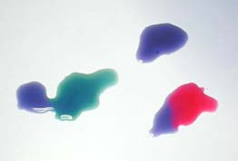
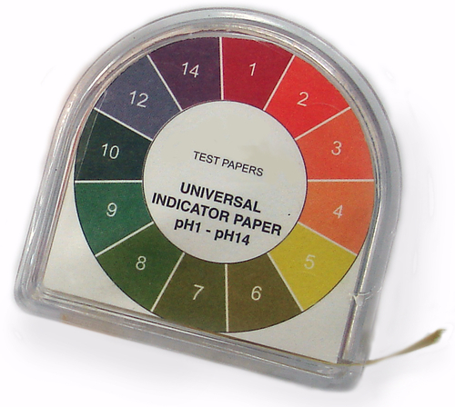

In hierdie hoofstuk stel ons leerders bekend aan die pH-skaal en leer ons hulle hoe om dit te meet en hoe om pH-waardes te interpreteer. Die hoofstuk bevat twee aktiwiteite oor hoe om pH te meet. Daar is 'n inleidende aktiwiteit oor meting wat help om die verband tussen die inhoud van die hoofstuk met werk in ander vakke soos Wiskunde en Tegnologie te beklemtoon. Dit help ook vasstel wat hulle reeds van meting weet.
Die ondersoek gebruik universele indikatorpapier en rooikoolpapier om die pH van 'n versameling huishoudelike items te meet. As jy nie universele indikatorpapier het nie, maar jy het universele indikatoroplossing, kan jy maklik die aktiwiteit aanpas: in plaas van papier gebruik moet leerders 2-3 druppels van die universele indikatoroplossing by hulle toetsoplossing gooi, let op na en skryf die kleurverandering neer. Rooikooloplossing kan ook in plaas van papier gebruik word. Dit werk die beste as omtrent 1 ml van elke toetsoplossing by 2 ml porsies rooikoolwater gevoeg word.
Volg die instruksies hieronder om rooikoolindikatorpapier te maak:
Sny 'n groot rooikool in dun skywe en sit in 'n pot.
Voeg net genoeg water by om al die kool te bedek.
Kook vir ongeveer 30 minute oor lae hitte. Voeg nog water by indien nodig sodat die kool bedek bly.
Verwyder die pot van die hitte en laat heeltemal afkoel.
Gooi die kool in 'n sif uit en vang die water in 'n plat lae bak op. Jy kan die gaar kool eet (of gooi dit op die komposhoop).
Sit stroke absorberende papier (papierhanddoeke, koffiefilters of filtreerpapier) in die koolwater.
Haal die papier na 30 minute uit en los op 'n warm plek om uit te droog. Jy kan die papier met 'n haardroër droogmaak, maar moet dit nìe in direkte sonlig los nie.
As die papier heeltemal droog is, sny dit in stroke (ongeveern 1 cm wyd). Die stroke sal lank hou as dit op 'n droë plek gestoor word.
Die tydtoekenning vir hierdie hoofstuk is 1 week en dus is 1.5 ure uiteengesit vir hierdie afdeling. Aangesien daar egter net twee belangrike opdragte in die hoofstuk is, mag jy dalk vinniger as 'n week werk. Beweeg dan aan na die volgende hoofstuk oor reaksies van sure met basisse wat meer tyd vereis.
5.1 Wat is die pH-waarde? (1.5 ure)
Take
Vaardighede
Aanbeveling
Aktiwiteit: Meetinstrumente en eenhede
Identifisering en waarneming
Opsioneel (Aanbeveel)
Aktiwiteit: Die pH-skaal
Waarneming, identifisering, onthou
Opsioneel (Aanbeveel)
5.2 Indikators (1.5 ure)
Take
Vaardighede
Aanbeveling
Ondersoek: Universele indikatorpapier en rooikoolindikatorpapier
Watter meting kan ons gebruik om te besluit of iets 'n suur of 'n basis is?
Waarna verwys die 'pH-skaal'?
Hoe kan ons die pH van 'n stof meet?
Wat beteken dit as 'n stof 'n pH van laer as 7 het?
Wat beteken dit as 'n stof 'n pH van hoër as 7 het?
Wat beteken dit as 'n stof 'n pH van 7 het?
Hoe reageer 'n universele indikator op 'n stof wat suur, basis of neutraal is?
Wat is die pH-waarde?
eenheid
suurheid
pH
Wanneer ons sê dat iets die eienskappe van 'n suur het, gebruik ons die byvoeglike naamwoord suur. As ons wil sê dat iets die eienskappe van 'n basis het, gebruik ons die byvoeglike naamwoord basies.
In Graad 7 het ons oor sure en basisse geleer. Kan jy onthou hoe om tussen hulle te onderskei? Hierdie tabel som die belangrikste eienskappe van 'n suur en 'n basis op.
Sure
Basisse
Proe suur
Voel grof tussen jou vingers
Kan korroderend wees
Kan veroorsaak dat basisse hulle basiese eienskappe verloor
Maak blou lakmoes rooi
Proe bitter
Voel glibberig tussen jou vingers
Kan korroderend wees
Kan veroorsaak dat sure hulle suureienskappe verloor
Maak rooi lakmoes blou
Ons het die kriteria in die tabel gebruik om 'n klomp stowwe as of sure, basisse of neutrale stowwe te klassifiseer. Die tabel hieronder bevat 'n paar voorbeelde en wys hulle klassifikasie.
Sure
Basisse
Neutrale stowwe
Lemoensap
Asyn
Suurlemoensap
Sitroensuur
Maagsuur
Koeksoda
Sepe
Bleikmiddel
Ammoniakoplossing
Water
Oplossing tafelsout
Kookolie
Laastens het ons geleer dat daar stowwe is wat ons kan gebruik om ons te wys of ons 'n suur of 'n basis het. Kan jy onthou wat hulle genoem word? Wenk: Hulle dui aan, of wys, of ons 'n suur of 'n basis het.
Indikators
Indikators kan vir ons wys of 'n stof 'n suur of 'n basis is. In hierdie hoofstuk gaan ons 'n verband trek tussen wat ons reeds weet oor sure en basisse en die nuwe kennis wat ons gaan kry.
Die belangrikste nuwe gedagte is dat ons kan meet hoe suur of hoe basies 'n stof is.
'n Paar gedagtes oor meting
Hierdie afdeling trek kortliks 'n verband tussen wat leerders reeds in ander vakke, veral Wiskunde, en in vorige grade oor meting en skale geleer het. Dit word gebruik om te wys dat baie goed gemeet kan word en lei die idee van meting van hoe suur of hoe basies 'n stof is in aangesien ons vroeër slegs stowwe as 'n suur of basis klassifiseer het sonder om te verwys na 'n skaal.
Kom ons gesels gou oor meting.
Meetinstrumente en eenhede
Wat sal jy met elkeen van die meetinstrumente hieronder meet?
'n Afmeting bestaan altyd uit twee dinge: 'n getal en 'n eenheid. Om te verduidelik wat dit beteken moet ons ons voorstel dat ons die lengte van 'n potlood meet.
Wat is die lengte van die potlood in die prentjie?
18.5 cm
Die eenheid is 'n baie belangrike deel van die afmeting aangesien dit die relatiewe grootte van die afmeting wys. As jy gesê het: "Die potlood is 18.5 lank," sou mense nie geweet het of jy sentimeters, millimeters of selfs meters bedoel het nie.
Watter eenheid sal jy gebruik om die lengte van jou klaskamer te meet?
Meter (m). Sentimeter is ook aanvaarbaar. Wat leerders moet besef is dat die eenhede uitdruklik gestel moet word.
Watter eenheid sal jy gebruik om jou massa te meet?
kilogram (kg)
Watter eenheid sal jy gebruik om temperatuur te meet?
grade Celsius (°C)
Kan ons meet hoe suur of hoe basies 'n stof is?
Die meet van suurheid en basisiteit
Die eenheid wat ons gebruik om die suurheid van 'n stof te meet (hoe suur die stof is) word pH genoem. Ons spreek dit as twee letters uit, 'p' en 'H' afsonderlik as ons pH sê.
Die term pH is vir die eerste keer in 1909 deur 'n Deense biochemikus Søren Peter Lauritz Sørensen beskryf. Die spesifieke oorsprong word betwis, maar dit word geredelik aanvaar dat pH 'n afkorting vir 'krag van waterstof' is waar 'p' kort is vir die Duitse woord potenz (wat krag of eksponent van beteken) en 'H' die elementsimbool vir waterstof is.
Het jy al die term pH teëgekom?
Laat jou leerders dit vir 'n rukkie in die klas bespreek. Hulle het dalk al 'n advertensie op TV gesien wat aanvoer dat 'n sekere sjampoe of lyfseep 'n gebalanseerde pH het. Vra hulle wat hulle dink dit beteken?
Jy het dalk al gehoor van 'n sjampoe wat 'n gebalanseerde pH het of van 'n lyfseep wat neutraal is. Miskien het jy al gehoor dat dit belangrik is dat die water in die swembad die regte pH het?
In wetenskap, net soos in die alledaagse lewe, meet ons die suurheid van stowwe in pH eenhede. Ons kon sê dat die suurheid van 'n spesifieke sjampoe 'n pH van 5.5 het. pH is die eenheid van meting en 5.5 is die getal wat die relatiewe suurheid op die pH-skaal aandui. Dit het egter aanvaarbaar geword om net te sê: "Die pH van die sjampoe is 5,5."
In die volgende aktiwiteit gaan ons meer leer oor die pH-skaal.
Die pH-skaal
INSTRUKSIES:
In die volgende prent word die pH-waardes van 'n verskeidenheid stowwe op die pH-skaal getoon.
Watter van die stowwe in die tabel aan die begin van die hoofstuk kan jy op die pH-skaal hierbo vind? Skryf hulle name en geraamde pH-waardes in die tabel hieronder.
Naam van stof
Geraamde pH
Naam van stof
Geraamde pH
Maagsuur
1
Suurlemoensap
2
Lemoensap
3
Gedistilleerde water
7
Koeksoda (oplossing)
9
Ammoniakoplossing
11
Seperige water
12
Bleikmiddel
13
Omkring die name van al die sure in die tabel met 'n rooi pen of Koki-pen.
Leerders moet lemoensap, suurlemoensap en maagsuur omkring.
Skryf die laagste en die hoogste pH-waardes van die sure neer. Dit verteenwoordig die omvang van die pH van die sure op ons lys.
Vind water op die skaal en omkring dit met 'n groen pen of Koki-pen. Is water 'n suur of 'n basis? Of is dit dalk iets anders?
Water is nie 'n suur of 'n basis nie. Water is 'n neutrale stof.
Leerders mag dalk hulp nodig hê om dit te onthou.
Wat is die pH van water?
Water het ' n pH gelyk aan 7.
Watter een se suurheid dink jy is hoër: lemoensap of suurlemoensap? As jy nie seker is nie, vra jouself: Watter een is suurder?
Suurlemoensap is suurder.
Watter een het die laer pH: lemoensap of suurlemoensap?
Suurlemoensap se pH is laer.
Ons het 'n paar belangrike goed uit die aktiwiteit geleer:
Sure se pH-waarde is laer as 7;
Basisse se pH-waarde is hoër as 7; en
Neutrale stowwe het 'n pH-waarde gelyk aan 7.
Die inligting is visueel in die volgende diagram opgesom.
Ons het in die aktiwiteit gesien dat suurlemoensap, wat suurder as lemoensap is, 'n laer pH as lemoensap het. Beteken dit dat die relatiewe pH van 'n stof vir ons sal sê hoe suur of basis dit is?
Kan ons meet hoe suur of basies iets is?
Toe ons vroeër lemoensap met suurlemoensap vergelyk het, het ons iets belangrik geleer: Hoe laer die pH van 'n stof, hoe suurder is dit. Vir basisse kan ons die volgende sê: Hoe hoër die pH van 'n stof, hoe meer basies is dit.
Hier is die opsomming:
Hoe nader aan pH 1, hoe sterker suur is die oplossing;
Hoe nader aan pH 14, hoe sterker basies is die oplossing; en
pH 7 is 'n neutrale stof.
Ons het geleer dat die pH-waarde van 'n stof vir ons sê of dit 'n suur of 'n basis is. Hoe meet ons pH? Een manier om dit te meet is met die hulp van suur-basisindikators. Kan jy onthou wat dit is? Die volgende afdeling sal help om jou te herinner.
Toets jou kennis oor pH met hierdie aanlyn-speletjie bit.ly/13dHNnm
Indikators
indikator
lakmoes
universele indikator
rooikoolindikator
Wat is 'n suur-basisindikator?
Ons weet dat sommige stowwe van kleur verander as hulle met 'n suur of 'n basis reageer. Hierdie stowwe word suurbasis-indikators genoem, wat ons kan wys of 'n stof 'n suur of 'n basis is.
Verskillende indikators verander by verskillende pH-waardes van kleur. Die tabel hieronder wys 'n paar suur-basisindikators en die kleure wat hulle by verskillende pH-waardes sal wees.
In Graad 7 het ons 'n indikator van rooikool gemaak en selfs sommiges van rooikoolindikator papier.Kan jy rooikoolwater op die tabel hierbo kry? In sure sal die rooikoolwater rooi of pienk word. In neutrale oplossings sal dit pers of violet wees. Watter kleur sal die rooikoolindikator wees as dit met 'n basis gemeng word?
Blou, groen of geel
As die rooikoolindikator met iets gemeng word wat net effe basies is, sal dit blou word. As dit gemeng word met iets wat sterk basies is, sal dit geel word.
As jy na die tabel hierbo kyk en die inligting vir rooikoolwater vergelyk met die prent hieronder sal die kleurverandering wat jy in die rooikoolwater (in Graad 7) waargeneem het, sin maak.
Rooikoolwater gemeng met 'n basis (links) en met 'n suur (regs). Die blou druppel aan die bokant is die sap in 'n neutrale oplossing (water).
Jy mag onthou dat ons ook geleer het oor lakmoes, die suur-basisindikator wat die mees algemeen gebruik word. Kan jy lakmoes op die tabel van indikators kry?
Lakmoes verander nie van kleur in die teenwoordigheid van 'n neutrale stof nie, maar reageer met sure en basisse op die volgende manier:
lakmoes is rooi in die teenwoordigheid van 'n suur; en
lakmoes is blou in die teenwoordigheid van 'n basis.
Lakmoes is beskikbaar as 'n oplossing of as lakmoespapier, alhoewel die papier oor die algemeen meer gebruik word.
Blou en rooi lakmoespapier.
Deur na verskillende kleure te verander in die teenwoordigheid van 'n suur of 'n basis kan indikators vir ons wys of 'n stof 'n suur of 'n basis is. In die volgende afdeling gaan ons leer oor 'n spesiale indikator wat so sensitief is dat dit nie net sê of 'n stof 'n suur of 'n basis is nie, maar ook wat die geraamde pH is!
Anders as lakmoes, kan 'n universele indikator baie meer akkurraat wys hoe suur of basies 'n oplossing is. Kan jy die universele indikator op die vorige tabel van indikators kry? Universele indikators kan in 'n klomp verskillende kleure verander afhangend van die pH van die oplossing. In die volgende prentjies word oplossings van toenemende pH gemeng met universele indikators om die volle omvang van kleure te wys.
Universele indikators kan baie verskillende kleure hê, van rooi vir sterk sure tot donkerpers vir sterk basisse. Die vloeistof in die middelste proefbuis is neutraal (pH=7) en dit word deur die groen kleur van die indikator aangedui.
Universele indikatoroplossings kan so baie kleure ten toon stel omdat dit eintlik 'n mengsel van verskillende indikators is.
Soos lakmoes kom die universele indikator ook in 'n papiervorm voor. Die pH-kleurreeks van die indikator word op die verpakking gedruk.

In die volgende ondersoek sal ons 'n paar huishoudelike stowwe met rooikoolindikatorpapier en universele indikatorpapier toets.
Universele indikatorpapier en rooikoolindikatorpapier
Die doel van die ondersoek is om te bepaal of die universele indikator en die rooikool gebruik kan word om te bepaal of een stof meer suur of basies as 'n ander is.
ONDERSOEKVRAAG:
Watter vraag het ons met hierdie ondersoek probeer antwoord?
Leerders kan hulle eie vraag formuleer, maar dit moet iets soortgelyk wees aan: Kan universele indikatorpapier en rooikoolindikatorpapier vir ons wys of een stof meer suur of basies as 'n ander is?
HIPOTESE:
Wat dink jy is die antwoord op die ondersoekvraag? Jy moet probeer om 'n voorspelling te maak.
Leerders moet hulle eie voorspellings/hipotese maak.
IDENTIFISEER VERANDERLIKES
Wat gaan jy in hierdie ondersoek verander? Wat word hierdie veranderlike genoem?
Ons gaan die stowwe wat ons toets verander. Die onafhanklike veranderlike is die een wat verander.
Wat gaan jy in hierdie ondersoek meet? Wat word hierdie veranderlike genoem?
Ons gaan die pH meet. Dit is die afhanklike veranderlike.
Wat gaan jy dieselfde hou? Wat word hierdie veranderlike genoem?
Die beheerde veranderlike is die tipe indikator wat ons in die metings gebruik, naamlik die universele indikatorpapier en die rooikoolpapier.
MATERIAAL EN APPARAAT:
klein houers (proefbuise of jogurthouers) wat die volgende stowwe bevat:
skoon water
sodawater
asyn
suurlemoensap
suikeroplossing (1 eetlepel opgelos in 'n koppie water)
koeksoda (1 eetlepel opgelos in 'n koppie water)
Handy Andy (1 eetlepel opgelos in 'n koppie water)
aspiriene (Disprin) (1 pil opgelos in 2 eetlepels water)
opwasmiddel (1 teelepel opgelos in 'n koppie water)
enige ander stowwe wat algemeen in die huis gevind word en nie gevaarlik is nie. Moenie sterk sure of basisse, soos bleikmiddel, gebruik nie. Voorstelle sluit in: tee, koffie, rooibostee, melk, wynsteensuur, soutwater, Sprite.
universele indikatorpapier
rooikoolindikatorpapier
glas- of plastiekstafies (plastiekteelepels of strooitjies sal ook goed werk).
wit teël of 'n vel A4 drukkerspapier
METODE:
Gebruik 'n klein strook (1 cm lank) universele indikatorpapier vir elke stof wat jy gaan toets. Sit hulle op 'n vel drukkerspapier of 'n wit teël neer.
Doop die glasstafie of strooitjie in die eerste oplossing en laat 'n druppel op die eerste stukkie universele indikatorpapier val. Verander die papier van kleur? Skryf die kleur van die papier vir elke stof op die regte plek in jou tabel neer.
Vergelyk die kleur van die toetsstrook met die kleurreeks op die verpakking van die universele indikatorpapierrol om die pH van die oplossing te vind. Skryf dit ook in jou tabel neer.
Spoel die strooitjie noukeurig met kraanwater af voor jy die volgende stof toets. Jy moet dit elke keer doen voor jy aanbeweeg na die volgende oplossing.
Toets al die oplossings en teken hulle kleure aan.
Bewaar die oplossings sodat jy dit weer kan toets met die rooikoolindikatorpapier.
Gebruik 'n klein strook (2 cm lank) van die rooikoolpapier vir elkeen van die stowwe wat jy gaan toets.
Doop 'n vars stukkie papier in elkeen van die oplossings en sit dit op die teël of wit papier neer om droog te word. Skryf die kleur van die rooikoolpapier vir elke toetsoplossing op die regte plek in jou tabel neer.
RESULTATE EN WAARNEMINGS:
Teken jou waarnemings in 'n tabel op.
Stof
Kleur met universele indikatorpapier
pH van die stof
Kleur met rooikoolpapier
Water
Sodawater
Asyn
Suurlemoensap
Suikerwater
Koeksoda
Handy Andy
Aspiriene
Opwasmiddel
Rangskik die stowwe wat jy getoets het volgens die kleurverandering van die universele indikator van meeste suur (donkerste rooi) na die meeste basies (pers).
Die antwoord hang af van die resultate en die stowwe wat gebruik is.
VRAE:
Watter van die stowwe wat getoets is, is sure?
Leerders moet al die stowwe lys wat 'n pH-lesing onder 7 gee.
Watter van die stowwe wat getoets is, is basisse?
Leerders moet al die stowwe lys wat 'n pH-lesing hoër as 7 gee.
Watter van die stowwe wat getoets is, is neutraal?
Leerders moet al die stowwe lys wat 'n pH-lesing van 7 gee.
Watter stof is die sterkste suur?
Antwoord hang van die aktiwiteit af.
Watter stof is die sterkste basis?
Antwoord hang van die aktiwiteit af.
Tel al die verskillende kleure wat moontlik is met die rooikool.
Antwoord hang af van aktiwiteit.
Watter kleur(e) het die rooikoolpapier geword in die stowwe wat getoets is wat sure was?
Die rooikoolpapier sal'n rooi-pienk kleur in sure hê.
Watter kleur(e) het die rooikoolpapier geword in stowwe wat getoets is wat basisse was?
Die rooikoolpapier sal 'n blou-groen kleur in basisse word.
Watter kleur(e) het die rooikoolpapier geword in stowwe wat getoets is wat neutraal was?
Die rooikoolpapier sal pers word (of bly) met neutrale stowwe.
Dink jy die rooikoolindikator kan gebruik word om pH te meet? Hoekom of hoekom nie?
Leerderafhanklike antwoord. Laat leerders toe om 'n opinie te vorm wat deur een of twee sinne motiveer word.
GEVOLGTREKKINGS:
Wat is jou gevolgtrekking(s)? (Hier moet jy die ondersoekvraag antwoord.)
Leerderafhanklike antwoord. Hulle moet oplet dat die universele indikator hulle toelaat om die pH van individuele stowwe te meet. Deur die stowwe in volgorde van toenemende pH te rangskik kan hulle die stowwe van suurste na mees basies rangskik. Hulle moet oplet dat die rooikoolindikator wel 'n reeks kleure met verskillende pH gee, maar dat dit nie so effektief soos die universele indikator is om pH te meet nie.
Iets om te oorweeg: Uitbreidingsvraag
Wat kon ons doen om die rooikoolindikator meer geskik te maak om pH te meet?
As daar tyd is kan leerders die vraag in die klas bespreek. Die belangrikste om op te let is dat elkeen van die kleure van die rooikoolindikator gestandardiseer/of gekoppel is aan'n spesifieke pH-waarde of reeks waardes. As ons dus 'n reeks voorbeelde van bekende pH-waardes het, kan ons die rooikooloplossing 'kalibreer' deur dit met elkeen van die standaard pH-waardes te meng en die kleur waar te neem. Dit sal ons in staat stel om 'n kleurkaart te maak wat ons dan kan gebruik soos die een wat beskikbaar is vir die universele indikator en ander kommersiële indikators.
In die laaste ondersoek het ons ondersoek of universele indikatorpapier of rooikoolindikatorpapier vir ons kan sê of 'n stof suurder of meer basies as 'n ander een is. Die voordeel van die universele indikator eerder as ander indikators gebruik is dat die universele indikator 'n meer akkurate pH-lesing gee. Dit is omdat dit verskillende kleure vir verskillende pH-waardes het. Die meeste ander indikators verander slegs een of twee keer van kleur oor die hele pH-reeks.
Baie ander gekleurde kosse kan gebruik word om suur-basisindikators te maak. Kyk na die diagram hieronder vir 'n paar voorbeelde. Jy kan selfs probeer om by die huis te maak.
pH-Indikators van ander eetbare stowwe.
Om die pH met 'n indikatoroplossing of papier te meet is maklik, ekonomies en gerieflik as ons net 'n paar metings het om te maak. As ons 'n klomp pH-metings moet maak, kan dit nogal vervelig en tydrowend wees om aanmekaar papierstrokies te maak, te skeur, te doop en dan te pas by 'n kleurkaart.
Universele indikators gee 'n reeks kleure wat gebruik kan word om die pH van 'n oplossing te bepaal. Lakmoespapier kan slegs aandui of 'n oplossing suur, neutraal of basies is.
Watter ander vinnige en maklike maniere is daar om pH te meet?
Hoe anders kan ons pH meet?
Wetenskaplikes gebruik 'n pH-meter om vinnig en akkuraat die pH van 'n stof te meet. Al is hulle baie duurder om aan te koop as indikatorpapier of -oplossings, is dit 'n goeie belegging vir 'n laboratorium wat baie pH-lesings per dag moet neem en waar die lesings vinnig geneem moet word.
'n pH-meter is 'n elektroniese instrument met 'n spesiale sensor aan die punt wat sensitief is vir sure en basisse. Dit is meer akkuraat as 'n universele indikator. Help die wetenskaplike om die pH van die oplossings in die foto's te lees en klassifiseer hulle as suur, neutraal of basies!
Die oplossing aan die linkerkant het 'n pH van 7.053 en is dus neutraal. Die oplossing aan die regterkant het 'n pH van 10.33 en is dus basies.
pH-meters werk as volg: Wanneer die sensor in die toetsoplossing gedruk word, stuur dit 'n sein na die elektroniese stroombaanwerk van die pH-meter wat dan omgeskakel word na 'n pH-lesing op die klein LCD-skermpie.
Ons het in hierdie hoofstuk geleer oor die pH-skaal. Ons het ook geleer hoe om pH-lesings te neem en die pH-waardes te interpreteer.
Opsomming
As ons wil bepaal of 'n oplossing (in water) suur of basies is, kan ons die pH meet.
Een manier om die pH te meet is met 'n suur-basisindikator soos 'n universele indikator.
'n Suur-basisindikator is 'n stof wat van kleur verander afhangend van die pH van die oplossing waarby dit gevoeg word.
Die omvang van die pH-skaal is tussen 1 en 14:
Sure het pH-waardes laer as 7;
Basisse het pH-waardes hoër as 7; en
Neutrale stowwe het pH-waardes omtrent gelyk aan 7.
Hoe suur of basies 'n oplossing is, hang af van sy relatiewe pH-waarde:
Hoe suurder 'n oplossing, hoe nader is die pH-waarde aan 0; en
Hoe meer basies 'n oplossing, hoe nader is die pH-waarde aan 14.
Konsepkaart
Wat kan jy gebruik om te bepaal of 'n stof 'n suur, 'n basis of neutraal is? Vul dit op die konsepkaart in. Voltooi dit deur die inligting oor die universele indikator in te vul. Vul suur, basis of neutraal in afhangend van die kleure wat gelys is.
Dit is die voltooide konsepkaart.
Hersieningsvrae
Vul die ontbrekende woorde in die sinne in. Skryf die woord op die lyntjie hieronder neer. [6 punte]
Iets wat wys of 'n stof 'n suur of 'n basis is deur van kleur te verander as ons dit by die stof gooi, word 'n __________ genoem.
indikator of suur-basisindikator
Die pH-skaal se omvang is tussen die waardes ______ en ______.
0;14
__________ het pH-waardes kleiner as 7.
Sure
Basisse het pH-waardes tussen __________.
7 en 14
__________ stowwe het pH-waardes omtrent gelyk aan 7.
Neutrale
Verbeel jou ons begin met 'n beker skoon, gedistilleerde water. Beantwoord die volgende vrae. [4 punte]
Wat sal die pH van die skoon, gedistilleerde water wees?
Die pH sal gelyk aan 7 wees.
Hoe sal die pH verander as ons 'n klein bietjie suur by die water gooi?
Die pH sal verlaag.
Hoe kan ons die pH verhoog?
Ons kan 'n basis byvoeg.
Hoe kan ons die pH na 'n hoër waarde, soos byvoorbeeld 13 verhoog?
Ons moet 'n groot hoeveelheid van 'n sterk basis byvoeg.
In die volgende prent is daar drie bekers met drie verskillende oplossings. Rooikoolwater word by elkeen van die bekers gegooi. Antwoord die volgende vrae. [4 x 2 = 8]
Watter oplossing, A, B of C, is die suurste? Motiveer jou antwoord.
Oplossing A is die suurste. Rooikoolwater word rooi in suuroplossings.
Watter oplossing, A, B of C, is die meeste basies? Motiveer jou antwoord.
Oplossing C is die meeste basies. As rooikoolwater groen word weet ons, ons het 'n basiese oplossing.
Watter oplossing A, B of C is neutraal? Motiveer jou antwoord.
Oplossing B is neutraal omdat die kleur van die rooikoolwater pers is in die oplossing. Dit is die kleur van rooikoolwater in neutrale oplossings.
Wat dink jy sal gebeur met die kleur van oplossing A as ons dit met oplossing B meng? Motiveer jou antwoord.
Die rooi kleur van die oplossing sal verander. As ons 'n basis by 'n suur gooi verloor die suur van sy sterkte. Die suur laat ook die basis van sy sterkte verloor. Die mengsel sal minder suur wees as oplossing A en minder basies as oplossing C. As ons genoeg basis by die mengsel van die twee oplossings gegooi het sodat die oplossing neutraal was, sou dit pers word.
'n Wetenskaplike het 6 oplossings gemerk A tot F. Die wetenskaplike toets elke oplossing met 'n universele indikator en teken haar resultate as volg op:
Oplossing
Kleur van universele indikator
A
Geel
B
Blou
C
Groen
D
Rooi
E
Pers
F
Oranje
Gebruik die resultate in die tabel en die kleurkaart vir die universele indikator onder die tabel om die volgende vrae te antwoord:
Watter oplossings is suur? Skryf hulle byskrifte hieronder. [2 punte]
A, F en D
Watter oplossings is basies. Skryf die byskrifte hieronder. [2 punte]
B en E
Watter oplossing is neutraal. Skryf die byskrif hieronder neer. [2 punte]
C
Rangskik die oplossings in die volgorde van die suurste tot die mees basies in die tabel hieronder. Dit beteken dat die oplossing wat die mees suur is bo moet wees en die mees basiese oplossing aan die onderkant van die tabel. Jy moet ook die kleur en geraamde pH-reeks van elke oplossing in die tabel skryf. [6 punte]


{kind=link}
{kind=link}